position: stickyRelevant Link

position: absoluteRelevant Link
Rule Disabled
border-radiusRelevant Link

Rule Disabled


inset-block-start & inset-inline-end
Relevant Link
MDN: inset-inline-end CSS property
Relevant Link

Rule Disabled


position: relative
Relevant Link
z-index rule
applied and z-index does not work on elements without
position.
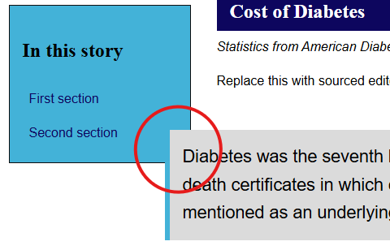
Rule Disabled
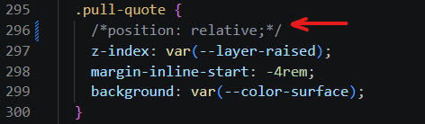
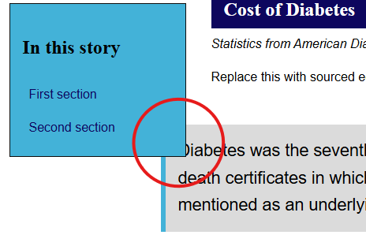
float: inline-start
Relevant Link
float: inline-start is disabled, or not present,
text fails to wrap around image and instead follows image in normal
document flow. Not ideal, but still visible.
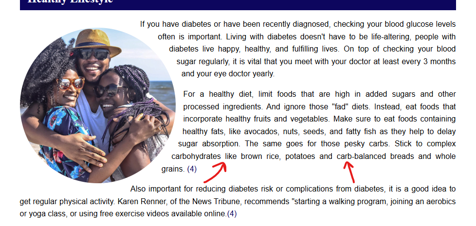
Rule Disabled
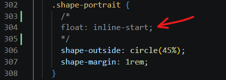
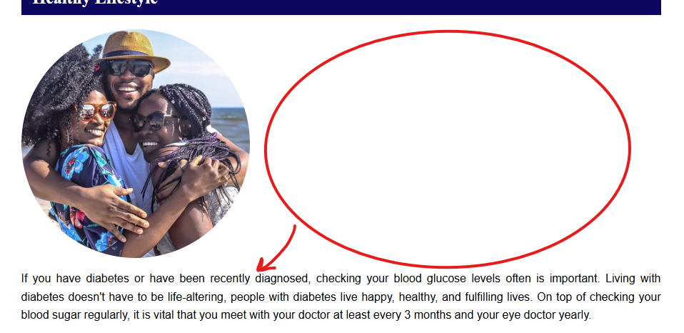
shape-outside: circle(45%)
Relevant Link
shape-outside is disabled, or absent, text does
wrap around image but doesn't follow the contour of the shape. Not
ideal, or as stylistically pleasing, but the text is still readable.
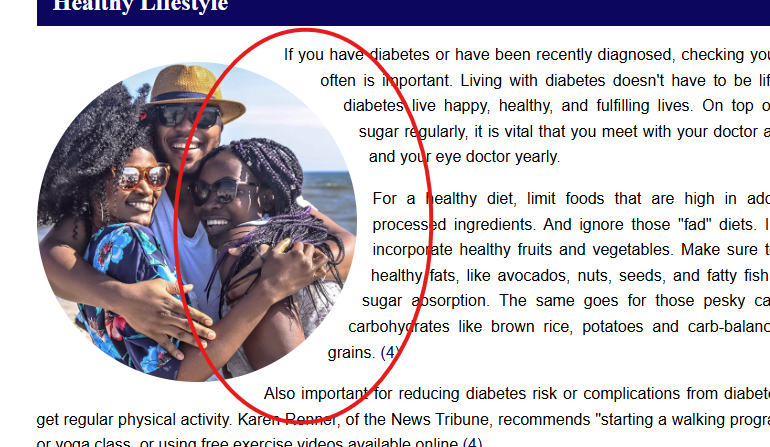
Rule Disabled
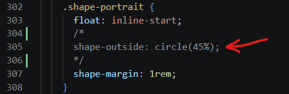
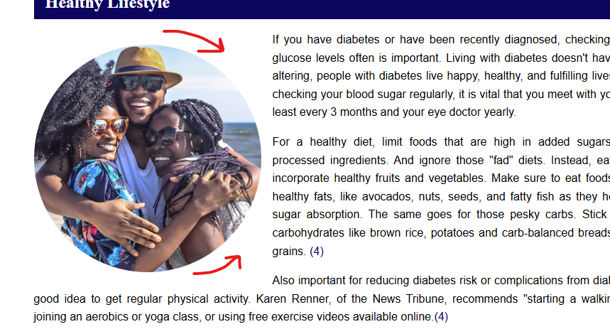
shape-margin: 1rem
Relevant Link
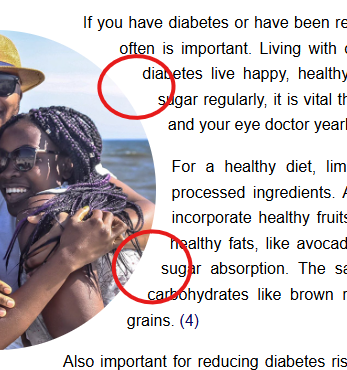
Rule Disabled
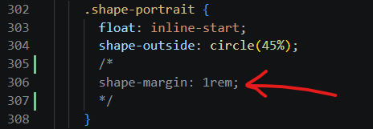
clip-path: polygon
Relevant Link
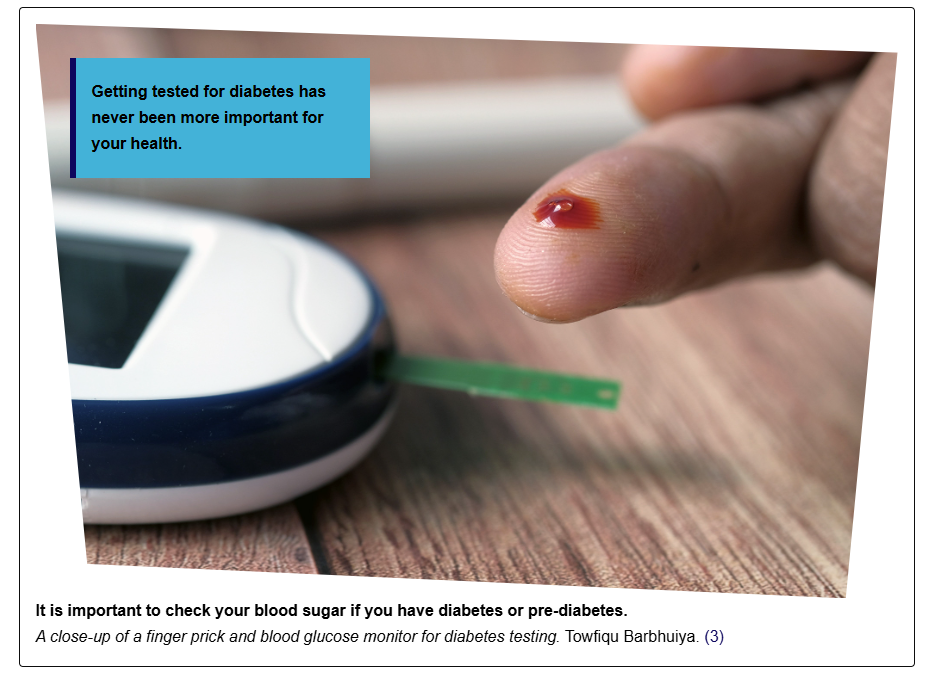
Rule Disabled
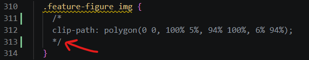
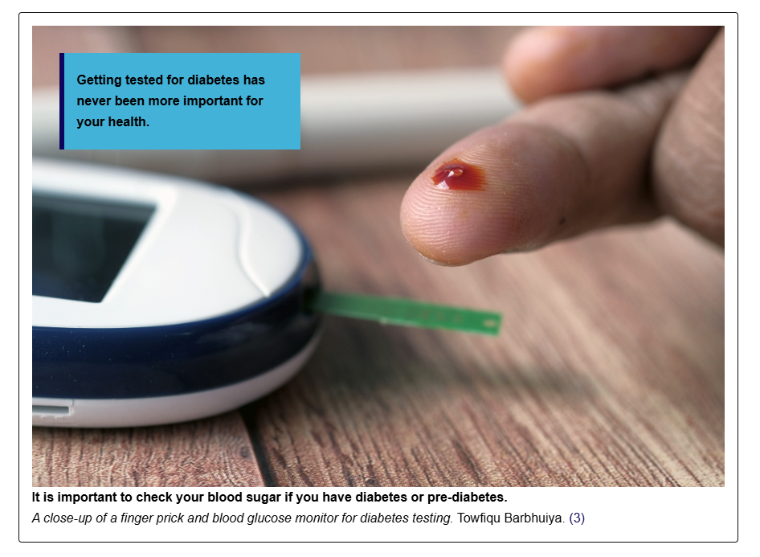
margin-inline-start
Relevant Link
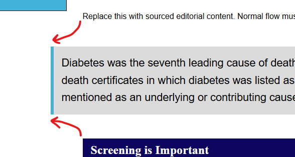
Rule Disabled
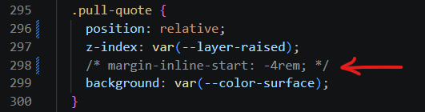
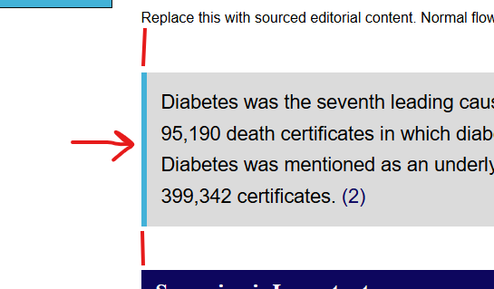